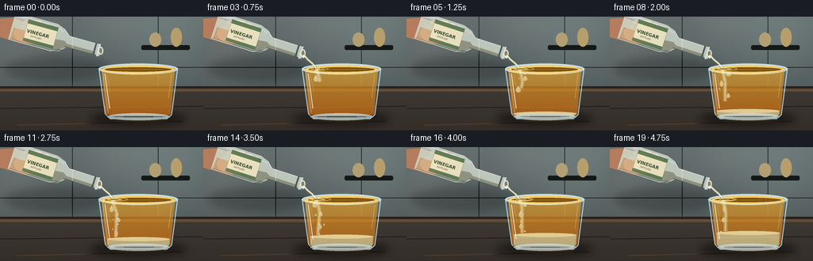
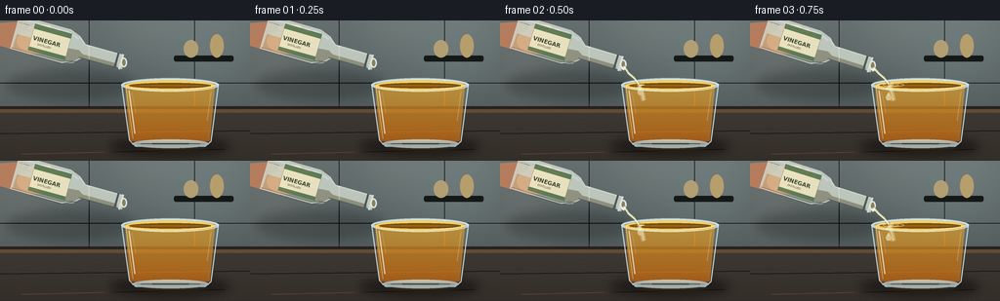

CODING AGENTS AS PIXEL WORLD MODELS
traex/GPT-5.6-Sol · phygen_140
点击播放 · 原生 RGB 像素
逐轮保存的候选
回放视频、检查图与代码变化。
每份候选均可单独播放。实际图片检查记录在下方工具轨迹中。
候选 01播放与检查图
点击播放 · 原生 RGB 像素


展开代码变化
--- 上一保存版本
+++ 本次保存版本
@@ -0,0 +1,287 @@
+from pathlib import Path
+import math
+import numpy as np
+from PIL import Image, ImageDraw, ImageFont, ImageFilter
+import artifact_io
+
+# Deterministic procedural renderer for: "A bottle of vinegar is gently poured into a glass of oil."
+W, H, N = 256, 144, 20
+S = 4
+WW, HH = W*S, H*S
+rng = np.random.default_rng(140)
+
+
+def sc(v):
+ return int(round(v*S))
+
+def pts(seq):
+ return [(sc(x), sc(y)) for x, y in seq]
+
+def ell(draw, box, **kw):
+ if 'width' in kw: kw['width'] = max(1, sc(kw['width']))
+ draw.ellipse(tuple(sc(x) for x in box), **kw)
+
+def line(draw, xy, **kw):
+ if 'width' in kw: kw['width'] = sc(kw['width'])
+ draw.line(pts(xy), **kw)
+
+def poly(draw, xy, **kw):
+ draw.polygon(pts(xy), **kw)
+
+def rounded(draw, box, radius, **kw):
+ draw.rounded_rectangle(tuple(sc(x) for x in box), radius=sc(radius), **kw)
+
+def smoothstep(x):
+ x = min(1.0, max(0.0, x))
+ return x*x*(3-2*x)
+
+def font(sz, bold=False):
+ p = '/usr/share/fonts/truetype/dejavu/DejaVuSans-Bold.ttf' if bold else '/usr/share/fonts/truetype/dejavu/DejaVuSans.ttf'
+ try: return ImageFont.truetype(p, sc(sz))
+ except: return ImageFont.load_default()
+
+# Static, subtly textured kitchen background.
+yy, xx = np.mgrid[0:HH, 0:WW]
+yf, xf = yy/S, xx/S
+wall = np.zeros((HH, WW, 3), dtype=np.float32)
+# cool, neutral wall lets the warm oil read clearly
+v = np.clip(1.0 - yf/190.0, 0, 1)
+wall[...,0] = 62 + 38*v
+wall[...,1] = 71 + 39*v
+wall[...,2] = 72 + 38*v
+# soft out-of-focus light pools
+for cx, cy, rad, col, strength in [(211,25,40,(80,91,88),0.8),(23,47,34,(106,93,73),0.42),(142,10,27,(120,124,111),0.28)]:
+ q = np.exp(-((xf-cx)**2+(yf-cy)**2)/(2*rad*rad))*strength
+ for k in range(3): wall[...,k] += q*col[k]*0.22
+noise = rng.normal(0, 1.2, (HH,WW,1))
+wall = np.clip(wall + noise, 0, 255).astype(np.uint8)
+base = Image.fromarray(wall, 'RGB').convert('RGBA')
+bd = ImageDraw.Draw(base, 'RGBA')
+# tiled wall seams and a blurred shelf silhouette
+line(bd, [(0,64),(256,64)], fill=(35,42,42,65), width=1)
+line(bd, [(91,0),(91,91)], fill=(40,45,45,35), width=1)
+line(bd, [(199,0),(199,91)], fill=(40,45,45,32), width=1)
+rounded(bd, (178,36,239,42), 2, fill=(20,25,24,35))
+ell(bd, (188,20,203,38), fill=(178,160,116,23))
+ell(bd, (215,14,229,38), fill=(183,159,109,18))
+# counter plane
+poly(bd, [(0,88),(256,88),(256,144),(0,144)], fill=(39,34,30,255))
+poly(bd, [(0,91),(256,91),(256,95),(0,95)], fill=(98,77,57,210))
+# countertop gradient strips
+for y in range(95,144):
+ shade = int(51 - (y-95)*0.19)
+ ImageDraw.Draw(base).line([(0,sc(y)),(WW,sc(y))], fill=(shade+11,shade+5,shade,255), width=S)
+# fine wood lines
+line(bd, [(0,116),(256,113)], fill=(25,21,19,70), width=1)
+line(bd, [(22,137),(230,132)], fill=(92,66,46,30), width=1)
+# object shadows
+shadow = Image.new('RGBA',(WW,HH),(0,0,0,0)); sd=ImageDraw.Draw(shadow,'RGBA')
+ell(sd,(112,119,236,139),fill=(0,0,0,120))
+ell(sd,(5,50,139,82),fill=(0,0,0,55))
+shadow=shadow.filter(ImageFilter.GaussianBlur(sc(5)))
+base=Image.alpha_composite(base,shadow)
+
+# Glass geometry constants.
+GL, GR = 124, 224
+BL, BR = 133, 216
+TOP_Y, BOT_Y = 66, 126
+
+def glass_clip_mask(top=65):
+ m=Image.new('L',(WW,HH),0); d=ImageDraw.Draw(m)
+ poly(d,[(128,top),(220,top),(215,123),(210,128),(139,128),(133,123)],fill=255)
+ return m.filter(ImageFilter.GaussianBlur(sc(.25)))
+
+
+def draw_bottle_and_hand(im, f):
+ # Bottle settles into a gentle pouring pose during the opening second.
+ settle=smoothstep(f/4)
+ ang=math.radians(15.5+2.5*settle)
+ c,s=math.cos(ang),math.sin(ang)
+ o=(15,12-settle*1.0)
+ def tf(u,v): return (o[0]+u*c-v*s, o[1]+u*s+v*c)
+ # hand behind the bottle, cropped naturally by frame
+ h=Image.new('RGBA',(WW,HH),(0,0,0,0)); hd=ImageDraw.Draw(h,'RGBA')
+ poly(hd,[(-8,3),(20,1),(43,12),(54,22),(49,33),(29,35),(4,27),(-8,24)],fill=(181,125,93,255))
+ ell(hd,(17,10,48,32),fill=(204,148,111,255))
+ # fingers curling around bottle
+ for i,(x,y,rot) in enumerate([(28,4,0),(37,8,0),(44,13,0)]):
+ rounded(hd,(x,y,x+25,y+7),3.5,fill=(213-i*5,157-i*4,119-i*3,245),outline=(116,72,54,90),width=sc(.6))
+ im.alpha_composite(h)
+
+ lay=Image.new('RGBA',(WW,HH),(0,0,0,0)); d=ImageDraw.Draw(lay,'RGBA')
+ # liquid inside translucent bottle
+ body=[tf(0,-18),tf(55,-18),tf(66,-14),tf(73,-7),tf(113,-7),tf(116,7),tf(73,7),tf(66,14),tf(55,18),tf(0,18)]
+ poly(d,body,fill=(208,218,205,210),outline=(233,243,235,250))
+ # subtle vinegar tint along lower edge of tilted bottle
+ liq=[tf(3,1),tf(58,1),tf(68,0),tf(73,3),tf(109,3),tf(111,7),tf(72,7),tf(64,14),tf(53,16),tf(2,16)]
+ poly(d,liq,fill=(226,216,169,95))
+ line(d,[tf(1,16),tf(54,16),tf(65,12)],fill=(118,127,119,75),width=1)
+ # glass highlights and underside shade
+ line(d,[tf(2,-15),tf(52,-15),tf(65,-11)],fill=(255,255,255,175),width=2)
+ line(d,[tf(1,-11),tf(45,-11)],fill=(255,255,255,70),width=1)
+ line(d,[tf(0,18),tf(55,18),tf(68,12)],fill=(73,81,75,100),width=1)
+ # shoulder and neck definition
+ line(d,[tf(66,-13),tf(73,-7),tf(112,-7)],fill=(250,255,250,180),width=1.2)
+ line(d,[tf(70,7),tf(112,7)],fill=(72,82,77,100),width=1)
+ # label as an angled quadrilateral
+ label=[tf(18,-14),tf(57,-14),tf(57,14),tf(18,14)]
+ poly(d,label,fill=(237,229,195,244),outline=(126,108,70,180))
+ # label bands add visual identity even at thumbnail scale
+ poly(d,[tf(18,-14),tf(57,-14),tf(57,-9),tf(18,-9)],fill=(91,124,83,240))
+ poly(d,[tf(18,10),tf(57,10),tf(57,14),tf(18,14)],fill=(91,124,83,220))
+ # Neck rings / open lip
+ line(d,[tf(108,-8),tf(108,8)],fill=(71,80,75,170),width=2)
+ line(d,[tf(113,-8),tf(113,8)],fill=(236,244,238,210),width=2)
+ end=tf(116,0)
+ ell(d,(end[0]-3.3,end[1]-5,end[0]+3.3,end[1]+5),fill=(45,52,48,240),outline=(235,245,238,230),width=sc(1))
+ # inner opening
+ ell(d,(end[0]-1.7,end[1]-3.5,end[0]+1.7,end[1]+3.5),fill=(145,133,93,225))
+ # label text: kept horizontal enough to remain clearly legible
+ # Use a small transparent text plate rotated with the bottle.
+ im.alpha_composite(lay)
+ plate=Image.new('RGBA',(sc(42),sc(14)),(0,0,0,0)); pd=ImageDraw.Draw(plate)
+ pd.text((sc(1),sc(0)),"VINEGAR",font=font(5.8,True),fill=(54,71,49,255),stroke_width=0)
+ pd.text((sc(7),sc(7)),"DISTILLED",font=font(2.7,False),fill=(81,73,52,240))
+ plate=plate.rotate(-math.degrees(ang),resample=Image.Resampling.BICUBIC,expand=True)
+ im.alpha_composite(plate,(sc(30),sc(14)))
+ return end
+
+
+def draw_glass_back(im, f):
+ lay=Image.new('RGBA',(WW,HH),(0,0,0,0)); d=ImageDraw.Draw(lay,'RGBA')
+ # back bowl silhouette and back rim
+ poly(d,[(124,66),(224,66),(216,124),(210,130),(139,130),(132,124)],fill=(173,206,210,18))
+ ell(d,(124,59,224,73),fill=(193,221,221,18),outline=(216,238,238,180),width=sc(1.1))
+ # back rim darker inner oval
+ ell(d,(128,62,220,70),outline=(74,92,88,110),width=sc(.8))
+ im.alpha_composite(lay)
+
+
+def draw_liquids(im, f, pour):
+ # Oil is already in the tumbler. Its warm translucency is represented with a clipped gradient.
+ oil=Image.new('RGBA',(WW,HH),(0,0,0,0)); arr=np.zeros((HH,WW,4),dtype=np.uint8)
+ top=66.5-0.7*pour
+ vinegar_h=max(0.0, min(15.0,(f-4)*1.05))
+ interface=123-vinegar_h
+ # Oil body gradient, clear gold near top and deep amber at base/interface.
+ for yi in range(HH):
+ y=yi/S
+ if y >= top and y <= 124:
+ q=(y-top)/(124-top)
+ arr[yi,:,0]=np.uint8(224-30*q)
+ arr[yi,:,1]=np.uint8(160-55*q)
+ arr[yi,:,2]=np.uint8(39-18*q)
+ arr[yi,:,3]=np.uint8(172+28*q)
+ oil=Image.fromarray(arr,'RGBA')
+ oil.putalpha(Image.composite(oil.getchannel('A'),Image.new('L',(WW,HH),0),glass_clip_mask(top)))
+ im.alpha_composite(oil)
+ d=ImageDraw.Draw(im,'RGBA')
+ # luminous oil surface and meniscus
+ ell(d,(128,61.5,220,71.8),fill=(235,177,57,120),outline=(255,207,92,205),width=sc(1))
+ ell(d,(132,64,216,69.5),fill=(155,101,20,55),outline=(118,80,23,90),width=sc(.6))
+ # gentle impact ripples, appearing only while pouring
+ if pour>0:
+ for j in range(3):
+ r=(4+j*5+((f*1.7+j*2)%5))*pour
+ ell(d,(144-r,66-r*.14,144+r,66+r*.14),outline=(255,226,146,int((95-j*20)*pour)),width=.6)
+ # Separated vinegar collecting beneath denser oil.
+ if vinegar_h>0:
+ vlay=Image.new('RGBA',(WW,HH),(0,0,0,0)); vd=ImageDraw.Draw(vlay,'RGBA')
+ # pale, almost clear lower layer; tint kept distinct from amber oil
+ poly(vd,[(135,interface),(214,interface),(213,124),(208,128),(140,128),(135,124)],fill=(207,222,190,150))
+ ell(vd,(135,interface-2,214,interface+3),fill=(224,234,201,105),outline=(249,247,196,180),width=sc(.7))
+ # refracted bright caustic at base
+ ell(vd,(142,122,208,129),fill=(242,247,213,52),outline=(251,249,216,95),width=sc(.6))
+ vlay.putalpha(Image.composite(vlay.getchannel('A'),Image.new('L',(WW,HH),0),glass_clip_mask(top)))
+ im.alpha_composite(vlay)
+ return top, interface
+
+
+def draw_pour_and_droplets(im, f, spout, top, interface, pour):
+ if pour<=0.015: return
+ lay=Image.new('RGBA',(WW,HH),(0,0,0,0)); d=ImageDraw.Draw(lay,'RGBA')
+ # Thin gravity-curved stream from bottle mouth into oil.
+ x0,y0=spout
+ wob=.55*math.sin(f*.72)
+ p=[(x0+1,y0+2),(131+wob,54),(137+wob*.6,59),(142,65)]
+ # draw dark refracted edge, broad glassy body, and a specular core
+ line(d,p,fill=(91,91,55,110),width=3.5)
+ line(d,p,fill=(231,230,187,210),width=2.3)
+ line(d,[(x0+.3,y0+2),(131,54),(137,59),(142,65)],fill=(255,255,236,220),width=.65)
+ # A small bead clinging to the lip.
+ ell(d,(x0-1.3,y0+2,x0+2.2,y0+6),fill=(235,235,195,205),outline=(255,255,242,180),width=sc(.4))
+ # Subsurface vinegar plume: narrower, fragmented as it descends through denser-looking oil.
+ age=max(0,f-1)
+ depth=min(interface-2, 69+age*5.4)
+ plume=[(142,67),(144+math.sin(f*.5),74),(146+math.sin(f*.65),82),(145+math.sin(f*.8),depth)]
+ if depth>71:
+ line(d,plume,fill=(255,244,191,70),width=5.0)
+ line(d,plume,fill=(232,226,177,145),width=2.0)
+ line(d,plume,fill=(255,255,226,165),width=.55)
+ # Deterministic falling globules. Each is born at the surface then sinks and drifts.
+ for birth in range(2,f+1,2):
+ a=f-birth
+ y=72 + a*5.2 + .42*a*a
+ if y>=interface-1: continue
+ x=145 + math.sin(birth*1.71+a*.47)*5 + a*.23
+ rw=2.1 + (birth%3)*.55
+ rh=3.1 + (birth%4)*.48
+ # teardrop + highlight; pale vinegar against golden oil
+ poly(d,[(x,y-rh),(x-rw,y+rh*.25),(x-rw*.55,y+rh),(x+rw*.55,y+rh),(x+rw,y+rh*.25)],fill=(238,233,188,155),outline=(255,249,213,175))
+ ell(d,(x-rw*.45,y-rh*.55,x+rw*.1,y-rh*.05),fill=(255,255,238,170))
+ # tiny bubbles/pearls around plume increase material readability
+ for k in range(6):
+ birth=3+k*2
+ if f<birth: continue
+ a=f-birth
+ y=70+a*4.2+k*2.3
+ if y>=interface: continue
+ x=140+((k*7)%11)+math.sin(a+k)*2
+ r=.65+(k%2)*.35
+ ell(d,(x-r,y-r,x+r,y+r),fill=(250,245,204,90),outline=(255,255,226,150),width=sc(.35))
+ im.alpha_composite(lay)
+
+
+def draw_glass_front(im, f):
+ lay=Image.new('RGBA',(WW,HH),(0,0,0,0)); d=ImageDraw.Draw(lay,'RGBA')
+ # side contours and thick base
+ line(d,[(124.5,66),(132.5,123),(138.5,129),(210,129),(216,124),(223.5,66)],fill=(221,241,241,190),width=1.2)
+ line(d,[(129,69),(136,121)],fill=(255,255,255,105),width=.7)
+ line(d,[(218.5,69),(213,121)],fill=(100,135,132,95),width=.7)
+ # narrow specular strips
+ line(d,[(132,72),(138,116)],fill=(255,255,255,165),width=1.2)
+ line(d,[(135,74),(139,95)],fill=(255,255,255,65),width=.5)
+ line(d,[(216,73),(212,103)],fill=(255,244,205,75),width=.8)
+ # front rim and heavy glass foot
+ ell(d,(124,60,224,73),outline=(235,249,247,185),width=1.1)
+ # Hide most of front oval's upper/lower ambiguity with explicit foreground arc
+ line(d,[(125,66),(131,69),(151,71),(175,72),(201,70),(219,67),(224,65)],fill=(241,250,247,135),width=1)
+ ell(d,(135,122,214,131),fill=(196,224,222,22),outline=(219,239,237,175),width=sc(1))
+ line(d,[(141,128),(207,128)],fill=(255,255,255,155),width=1)
+ im.alpha_composite(lay)
+
+
+def render_frame(f):
+ im=base.copy()
+ draw_glass_back(im,f)
+ pour=smoothstep((f-1)/3)
+ # liquids are behind the bottle stream and glass front
+ top,interface=draw_liquids(im,f,pour)
+ spout=draw_bottle_and_hand(im,f)
+ draw_pour_and_droplets(im,f,spout,top,interface,pour)
+ draw_glass_front(im,f)
+ # Soft contact gleam on the counter under glass.
+ gleam=Image.new('RGBA',(WW,HH),(0,0,0,0)); gd=ImageDraw.Draw(gleam,'RGBA')
+ ell(gd,(139,128,215,134),fill=(239,193,91,28))
+ gleam=gleam.filter(ImageFilter.GaussianBlur(sc(2)))
+ im=Image.alpha_composite(im,gleam)
+ # Fine optical grain keeps gradients from looking synthetic.
+ rgb=np.asarray(im.convert('RGB').resize((W,H),Image.Resampling.LANCZOS)).astype(np.int16)
+ nr=np.random.default_rng(9000+f).normal(0,.42,rgb.shape[:2])[:,:,None]
+ rgb=np.clip(rgb+nr,0,255).astype(np.uint8)
+ return rgb
+
+frames=np.stack([render_frame(i) for i in range(N)],axis=0)
+assert frames.shape==(20,144,256,3) and frames.dtype==np.uint8
+artifact_io.save(frames,Path(__file__).resolve().parent)
+print('saved',frames.shape,frames.dtype)
可观测工具轨迹
实际执行的命令与返回图片。
命令 1exit 0
/bin/bash -lc "cat prompt.txt && printf '\\n--- GENERATION_RULES.md ---\\n' && cat GENERATION_RULES.md"
命令 2exit 0
/bin/bash -lc "cat task_spec.json && printf '\\n--- FILES ---\\n' && find . -maxdepth 2 -type f -printf '%p\\n' | sort"
命令 3exit 0
/bin/bash -lc "command -v ffmpeg; command -v blender; command -v python3; python3 - <<'PY' mods=['numpy','PIL','cv2','imageio','moviepy','torch'] for m in mods: try: x=__import__(m); print(m, 'OK', getattr(x,'__version__','')) except Exception as e: print(m,'NO',e) PY"
命令 4exit 0
/bin/bash -lc 'cat artifact_io.py'
命令 5exit 2
/bin/bash -lc "cat > generate.py <<'PY'
from pathlib import Path
import math
import numpy as np
from PIL import Image, ImageDraw, ImageFont, ImageFilter
import artifact_io
# Deterministic procedural renderer for: \"A bottle of vinegar is gently poured into a glass of oil.\"
W, H, N = 256, 144, 20
S = 4
WW, HH = W*S, H*S
rng = np.random.default_rng(140)
def sc(v):
return int(round(v*S))
def pts(seq):
return [(sc(x), sc(y)) for x, y in seq]
def ell(draw, box, **kw):
draw.ellipse(tuple(sc(x) for x in box), **kw)
def line(draw, xy, **kw):
if 'width' in kw: kw['width'] = sc(kw['width'])
draw.line(pts(xy), **kw)
def poly(draw, xy, **kw):
draw.polygon(pts(xy), **kw)
def rounded(draw, box, radius, **kw):
draw.rounded_rectangle(tuple(sc(x) for x in box), radius=sc(radius), **kw)
def smoothstep(x):
x = min(1.0, max(0.0, x))
return x*x*(3-2*x)
def font(sz, bold=False):
p = '/usr/share/fonts/truetype/dejavu/DejaVuSans-Bold.ttf' if bold else '/usr/share/fonts/truetype/dejavu/DejaVuSans.ttf'
try: return ImageFont.truetype(p, sc(sz))
except: return ImageFont.load_default()
# Static, subtly textured kitchen background.
yy, xx = np.mgrid[0:HH, 0:WW]
yf, xf = yy/S, xx/S
wall = np.zeros((HH, WW, 3), dtype=np.float32)
# cool, neutral wall lets the warm oil read clearly
v = np.clip(1.0 - yf/190.0, 0, 1)
wall[...,0] = 62 + 38*v
wall[...,1] = 71 + 39*v
wall[...,2] = 72 + 38*v
# soft out-of-focus light pools
for cx, cy, rad, col, strength in [(211,25,40,(80,91,88),0.8),(23,47,34,(106,93,73),0.42),(142,10,27,(120,124,111),0.28)]:
q = np.exp(-((xf-cx)**2+(yf-cy)**2)/(2*rad*rad))*strength
for k in range(3): wall[...,k] += q*col[k]*0.22
noise = rng.normal(0, 1.2, (HH,WW,1))
wall = np.clip(wall + noise, 0, 255).astype(np.uint8)
base = Image.fromarray(wall, 'RGB').convert('RGBA')
bd = ImageDraw.Draw(base, 'RGBA')
# tiled wall seams and a blurred shelf silhouette
line(bd, [(0,64),(256,64)], fill=(35,42,42,65), width=1)
line(bd, [(91,0),(91,91)], fill=(40,45,45,35), width=1)
line(bd, [(199,0),(199,91)], fill=(40,45,45,32), width=1)
rounded(bd, (178,36,239,42), 2, fill=(20,25,24,35))
ell(bd, (188,20,203,38), fill=(178,160,116,23))
ell(bd, (215,14,229,38), fill=(183,159,109,18))
# counter plane
poly(bd, [(0,88),(256,88),(256,144),(0,144)], fill=(39,34,30,255))
poly(bd, [(0,91),(256,91),(256,95),(0,95)], fill=(98,77,57,210))
# countertop gradient strips
for y in range(95,144):
shade = int(51 - (y-95)*0.19)
ImageDraw.Draw(base).line([(0,sc(y)),(WW,sc(y))], fill=(shade+11,shade+5,shade,255), width=S)
# fine wood lines
line(bd, [(0,116),(256,113)], fill=(25,21,19,70), width=1)
line(bd, [(22,137),(230,132)], fill=(92,66,46,30), width=1)
# object shadows
shadow = Image.new('RGBA',(WW,HH),(0,0,0,0)); sd=ImageDraw.Draw(shadow,'RGBA')
ell(sd,(112,119,236,139),fill=(0,0,0,120))
ell(sd,(5,50,139,82),fill=(0,0,0,55))
shadow=shadow.filter(ImageFilter.GaussianBlur(sc(5)))
base=Image.alpha_composite(base,shadow)
# Glass geometry constants.
GL, GR = 124, 224
BL, BR = 133, 216
TOP_Y, BOT_Y = 66, 126
def glass_clip_mask(top=65):
m=Image.new('L',(WW,HH),0); d=ImageDraw.Draw(m)
poly(d,[(128,top),(220,top),(215,123),(210,128),(139,128),(133,123)],fill=255)
return m.filter(ImageFilter.GaussianBlur(sc(.25)))
def draw_bottle_and_hand(im, f):
# Bottle settles into a gentle pouring pose during the opening second.
settle=smoothstep(f/4)
ang=math.radians(15.5+2.5*settle)
c,s=math.cos(ang),math.sin(ang)
o=(15,12-settle*1.0)
def tf(u,v): return (o[0]+u*c-v*s, o[1]+u*s+v*c)
# hand behind the bottle, cropped naturally by frame
h=Image.new('RGBA',(WW,HH),(0,0,0,0)); hd=ImageDraw.Draw(h,'RGBA')
poly(hd,[(-8,3),(20,1),(43,12),(54,22),(49,33),(29,35),(4,27),(-8,24)],fill=(181,125,93,255))
ell(hd,(17,10,48,32),fill=(204,148,111,255))
# fingers curling around bottle
for i,(x,y,rot) in enumerate([(28,4,0),(37,8,0),(44,13,0)]):
rounded(hd,(x,y,x+25,y+7),3.5,fill=(213-i*5,157-i*4,119-i*3,245),outline=(116,72,54,90),width=sc(.6))
im.alpha_composite(h)
lay=Image.new('RGBA',(WW,HH),(0,0,0,0)); d=ImageDraw.Draw(lay,'RGBA')
# liquid inside translucent bottle
body=[tf(0,-18),tf(55,-18),tf(66,-14),tf(73,-7),tf(113,-7),tf(116,7),tf(73,7),tf(66,14),tf(55,18),tf(0,18)]
poly(d,body,fill=(208,218,205,210),outline=(233,243,235,250))
# subtle vinegar tint along lower edge of tilted bottle
liq=[tf(3,1),tf(58,1),tf(68,0),tf(73,3),tf(109,3),tf(111,7),tf(72,7),tf(64,14),tf(53,16),tf(2,16)]
poly(d,liq,fill=(226,216,169,95))
line(d,[tf(1,16),tf(54,16),tf(65,12)],fill=(118,127,119,75),width=1)
# glass highlights and underside shade
line(d,[tf(2,-15),tf(52,-15),tf(65,-11)],fill=(255,255,255,175),width=2)
line(d,[tf(1,-11),tf(45,-11)],fill=(255,255,255,70),width=1)
line(d,[tf(0,18),tf(55,18),tf(68,12)],fill=(73,81,75,100),width=1)
# shoulder and neck definition
line(d,[tf(66,-13),tf(73,-7),tf(112,-7)],fill=(250,255,250,180),width=1.2)
line(d,[tf(70,7),tf(112,7)],fill=(72,82,77,100),width=1)
# label as an angled quadrilateral
label=[tf(18,-14),tf(57,-14),tf(57,14),tf(18,14)]
poly(d,label,fill=(237,229,195,244),outline=(126,108,70,180))
# label bands add visual identity even at thumbnail scale
poly(d,[tf(18,-14),tf(57,-14),tf(57,-9),tf(18,-9)],fill=(91,124,83,240))
poly(d,[tf(18,10),tf(57,10),tf(57,14),tf(18,14)],fill=(91,124,83,220))
# Neck rings / open lip
line(d,[tf(108,-8),tf(108,8)],fill=(71,80,75,170),width=2)
line(d,[tf(113,-8),tf(113,8)],fill=(236,244,238,210),width=2)
end=tf(116,0)
ell(d,(end[0]-3.3,end[1]-5,end[0]+3.3,end[1]+5),fill=(45,52,48,240),outline=(235,245,238,230),width=sc(1))
# inner opening
ell(d,(end[0]-1.7,end[1]-3.5,end[0]+1.7,end[1]+3.5),fill=(145,133,93,225))
# label text: kept horizontal enough to remain clearly legible
# Use a small transparent text plate rotated with the bottle.
im.alpha_composite(lay)
plate=Image.new('RGBA',(sc(42),sc(14)),(0,0,0,0)); pd=ImageDraw.Draw(plate)
pd.text((sc(1),sc(0)),\"VINEGAR\",font=font(5.8,True),fill=(54,71,49,255),stroke_width=0)
pd.text((sc(7),sc(7)),\"DISTILLED\",font=font(2.7,False),fill=(81,73,52,240))
plate=plate.rotate(-math.degrees(ang),resample=Image.Resampling.BICUBIC,expand=True)
im.alpha_composite(plate,(sc(30),sc(14)))
return end
def draw_glass_back(im, f):
lay=Image.new('RGBA',(WW,HH),(0,0,0,0)); d=ImageDraw.Draw(lay,'RGBA')
# back bowl silhouette and back rim
poly(d,[(124,66),(224,66),(216,124),(210,130),(139,130),(132,124)],fill=(173,206,210,18))
ell(d,(124,59,224,73),fill=(193,221,221,18),outline=(216,238,238,180),width=sc(1.1))
# back rim darker inner oval
ell(d,(128,62,220,70),outline=(74,92,88,110),width=sc(.8))
im.alpha_composite(lay)
def draw_liquids(im, f, pour):
# Oil is already in the tumbler. Its warm translucency is represented with a clipped gradient.
oil=Image.new('RGBA',(WW,HH),(0,0,0,0)); arr=np.zeros((HH,WW,4),dtype=np.uint8)
top=66.5-0.7*pour
vinegar_h=max(0.0, min(15.0,(f-4)*1.05))
interface=123-vinegar_h
# Oil body gradient, clear gold near top and deep amber at base/interface.
for yi in range(HH):
y=yi/S
if y >= top and y <= 124:
q=(y-top)/(124-top)
arr[yi,:,0]=np.uint8(224-30*q)
arr[yi,:,1]=np.uint8(160-55*q)
arr[yi,:,2]=np.uint8(39-18*q)
arr[yi,:,3]=np.uint8(172+28*q)
oil=Image.fromarray(arr,'RGBA')
oil.putalpha(Image.composite(oil.getchannel('A'),Image.new('L',(WW,HH),0),glass_clip_mask(top)))
im.alpha_composite(oil)
d=ImageDraw.Draw(im,'RGBA')
# luminous oil surface and meniscus
ell(d,(128,61.5,220,71.8),fill=(235,177,57,120),outline=(255,207,92,205),width=sc(1))
ell(d,(132,64,216,69.5),fill=(155,101,20,55),outline=(118,80,23,90),width=sc(.6))
# gentle impact ripples, appearing only while pouring
if pour>0:
for j in range(3):
r=(4+j*5+((f*1.7+j*2)%5))*pour
ell(d,(144-r,66-r*.14,144+r,66+r*.14),outline=(255,226,146,int((95-j*20)*pour)),width=.6)
# Separated vinegar collecting beneath denser oil.
if vinegar_h>0:
vlay=Image.new('RGBA',(WW,HH),(0,0,0,0)); vd=ImageDraw.Draw(vlay,'RGBA')
# pale, almost clear lower layer; tint kept distinct from amber oil
poly(vd,[(135,interface),(214,interface),(213,124),(208,128),(140,128),(135,124)],fill=(207,222,190,150))
ell(vd,(135,interface-2,214,interface+3),fill=(224,234,201,105),outline=(249,247,196,180),width=sc(.7))
# refracted bright caustic at base
ell(vd,(142,122,208,129),fill=(242,247,213,52),outline=(251,249,216,95),width=sc(.6))
vlay.putalpha(Image.composite(vlay.getchannel('A'),Image.new('L',(WW,HH),0),glass_clip_mask(top)))
im.alpha_composite(vlay)
return top, interface
def draw_pour_and_droplets(im, f, spout, top, interface, pour):
if pour<=0.015: return
lay=Image.new('RGBA',(WW,HH),(0,0,0,0)); d=ImageDraw.Draw(lay,'RGBA')
# Thin gravity-curved stream from bottle mouth into oil.
x0,y0=spout
wob=.55*math.sin(f*.72)
p=[(x0+1,y0+2),(131+wob,54),(137+wob*.6,59),(142,65)]
# draw dark refracted edge, broad glassy body, and a specular core
line(d,p,fill=(91,91,55,110),width=3.5)
line(d,p,fill=(231,230,187,210),width=2.3)
line(d,[(x0+.3,y0+2),(131,54),(137,59),(142,65)],fill=(255,255,236,220),width=.65)
# A small bead clinging to the lip.
ell(d,(x0-1.3,y0+2,x0+2.2,y0+6),fill=(235,235,195,205),outline=(255,255,242,180),width=sc(.4))
# Subsurface vinegar plume: narrower, fragmented as it descends through denser-looking oil.
age=max(0,f-1)
depth=min(interface-2, 69+age*5.4)
plume=[(142,67),(144+math.sin(f*.5),74),(146+math.sin(f*.65),82),(145+math.sin(f*.8),depth)]
if depth>71:
line(d,plume,fill=(255,244,191,70),width=5.0)
line(d,plume,fill=(232,226,177,145),width=2.0)
line(d,plume,fill=(255,255,226,165),width=.55)
# Deterministic falling globules. Each is born at the surface then sinks and drifts.
for birth in range(2,f+1,2):
a=f-birth
y=72 + a*5.2 + .42*a*a
if y>=interface-1: continue
x=145 + math.sin(birth*1.71+a*.47)*5 + a*.23
rw=2.1 + (birth%3)*.55
rh=3.1 + (birth%4)*.48
# teardrop + highlight; pale vinegar against golden oil
poly(d,[(x,y-rh),(x-rw,y+rh*.25),(x-rw*.55,y+rh),(x+rw*.55,y+rh),(x+rw,y+rh*.25)],fill=(238,233,188,155),outline=(255,249,213,175))
ell(d,(x-rw*.45,y-rh*.55,x+rw*.1,y-rh*.05),fill=(255,255,238,170))
# tiny bubbles/pearls around plume increase material readability
for k in range(6):
birth=3+k*2
if f<birth: continue
a=f-birth
y=70+a*4.2+k*2.3
if y>=interface: continue
x=140+((k*7)%11)+math.sin(a+k)*2
r=.65+(k%2)*.35
ell(d,(x-r,y-r,x+r,y+r),fill=(250,245,204,90),outline=(255,255,226,150),width=sc(.35))
im.alpha_composite(lay)
def draw_glass_front(im, f):
lay=Image.new('RGBA',(WW,HH),(0,0,0,0)); d=ImageDraw.Draw(lay,'RGBA')
# side contours and thick base
line(d,[(124.5,66),(132.5,123),(138.5,129),(210,129),(216,124),(223.5,66)],fill=(221,241,241,190),width=1.2)
line(d,[(129,69),(136,121)],fill=(255,255,255,105),width=.7)
line(d,[(218.5,69),(213,121)],fill=(100,135,132,95),width=.7)
# narrow specular strips
line(d,[(132,72),(138,116)],fill=(255,255,255,165),width=1.2)
line(d,[(135,74),(139,95)],fill=(255,255,255,65),width=.5)
line(d,[(216,73),(212,103)],fill=(255,244,205,75),width=.8)
# front rim and heavy glass foot
ell(d,(124,60,224,73),outline=(235,249,247,185),width=1.1)
# Hide most of front oval's upper/lower ambiguity with explicit foreground arc
line(d,[(125,66),(131,69),(151,71),(175,72),(201,70),(219,67),(224,65)],fill=(241,250,247,135),width=1)
ell(d,(135,122,214,131),fill=(196,224,222,22),outline=(219,239,237,175),width=sc(1))
line(d,[(141,128),(207,128)],fill=(255,255,255,155),width=1)
im.alpha_composite(lay)
def render_frame(f):
im=base.copy()
draw_glass_back(im,f)
pour=smoothstep((f-1)/3)
# liquids are behind the bottle stream and glass front
top,interface=draw_liquids(im,f,pour)
spout=draw_bottle_and_hand(im,f)
draw_pour_and_droplets(im,f,spout,top,interface,pour)
draw_glass_front(im,f)
# Soft contact gleam on the counter under glass.
gleam=Image.new('RGBA',(WW,HH),(0,0,0,0)); gd=ImageDraw.Draw(gleam,'RGBA')
ell(gd,(139,128,215,134),fill=(239,193,91,28))
gleam=gleam.filter(ImageFilter.GaussianBlur(sc(2)))
im=Image.alpha_composite(im,gleam)
# Fine optical grain keeps gradients from looking synthetic.
rgb=np.asarray(im.convert('RGB').resize((W,H),Image.Resampling.LANCZOS)).astype(np.int16)
nr=np.random.default_rng(9000+f).normal(0,.42,rgb.shape[:2])[:,:,None]
rgb=np.clip(rgb+nr,0,255).astype(np.uint8)
return rgb
frames=np.stack([render_frame(i) for i in range(N)],axis=0)
assert frames.shape==(20,144,256,3) and frames.dtype==np.uint8
artifact_io.save(frames,Path(__file__).resolve().parent)
print('saved',frames.shape,frames.dtype)
PY
python3 generate.py
ls -lh pixels.npz inspection.png transition_check.png index.html frames/00.png frames/19.png"命令 6exit 0
/bin/bash -lc "python3 - <<'PY' p='generate.py' s=open(p).read() s=s.replace(\"def ell(draw, box, **kw):\\n draw.ellipse(tuple(sc(x) for x in box), **kw)\", \"def ell(draw, box, **kw):\\n if 'width' in kw: kw['width'] = max(1, sc(kw['width']))\\n draw.ellipse(tuple(sc(x) for x in box), **kw)\") open(p,'w').write(s) PY python3 generate.py ls -lh pixels.npz inspection.png transition_check.png index.html frames/00.png frames/19.png"
命令 7exit 0
/bin/bash -lc "python3 - <<'PY'
import json, numpy as np
from PIL import Image
s=json.load(open('task_spec.json'))
z=np.load('pixels.npz')['pixels']
imgs=[]
for i in range(s['frames']):
im=Image.open(f'frames/{i:02d}.png')
imgs.append(np.asarray(im))
assert im.mode=='RGB' and im.size==(s['width'],s['height'])
a=np.stack(imgs)
assert a.shape==(20,144,256,3) and a.dtype==np.uint8
packed=(a[...,0].astype(np.uint32)<<16)|(a[...,1].astype(np.uint32)<<8)|a[...,2]
assert np.array_equal(z,packed.transpose(1,2,0))
print('VALID',a.shape,a.dtype,'npz',z.shape,z.dtype)
print('frame-change pixels:',[int(np.any(a[i]"'!=a[i-1],axis=2).sum()) for i in range(1,20)])
print('"'mean absolute temporal delta:',float(np.abs(np.diff(a.astype(np.int16),axis=0)).mean()))
PY"命令 8exit 0
/bin/bash -lc "git status --short 2>/dev/null || true; find frames -maxdepth 1 -name '*.png' | wc -l; test -s index.html && test -s pixels.npz && echo artifacts-present"
视觉工具实际返回图片 1

保存候选 1 份；完成命令 8 次；可验证图片返回 1 张。原始 API 响应与完整日志保留在本地。